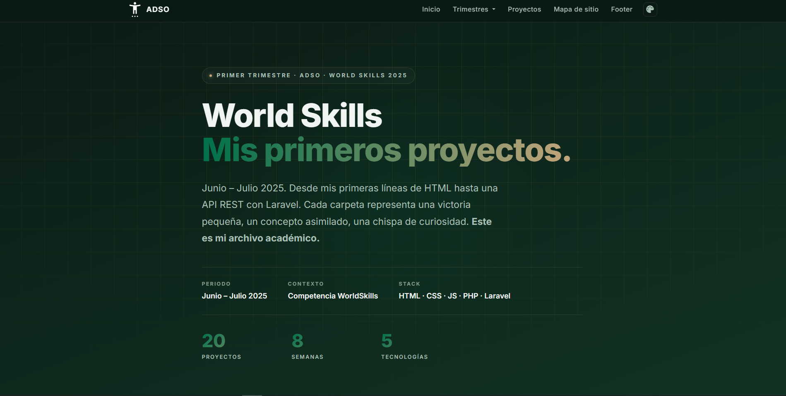
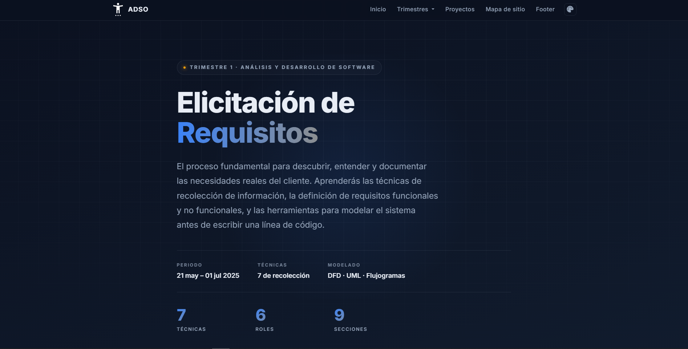
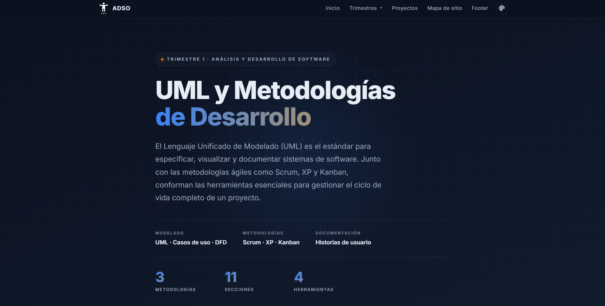
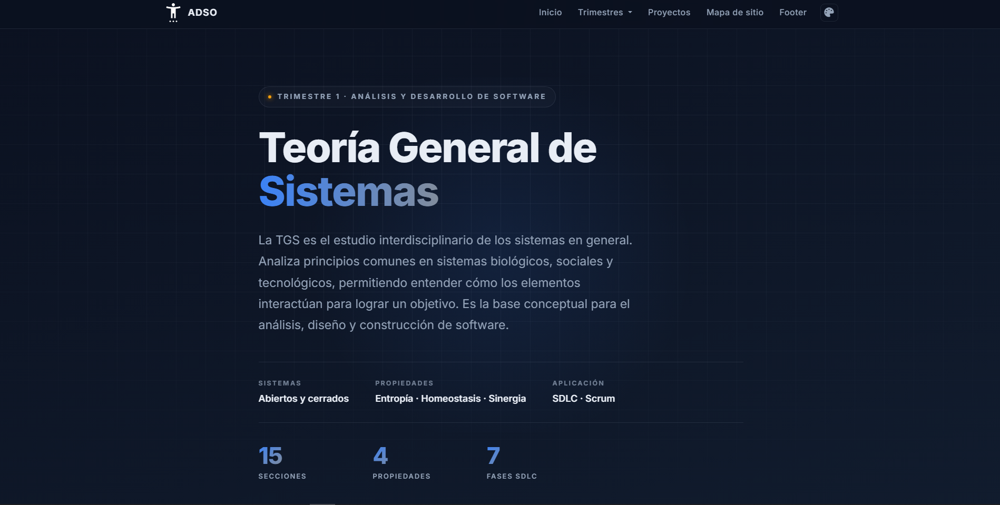
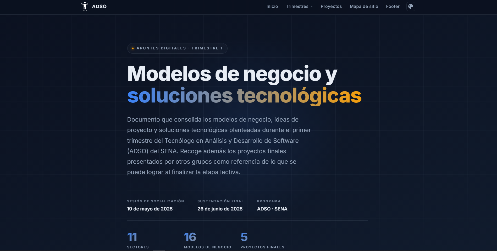
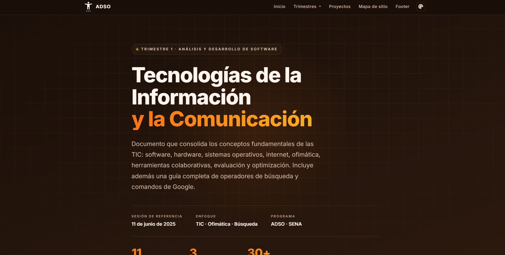
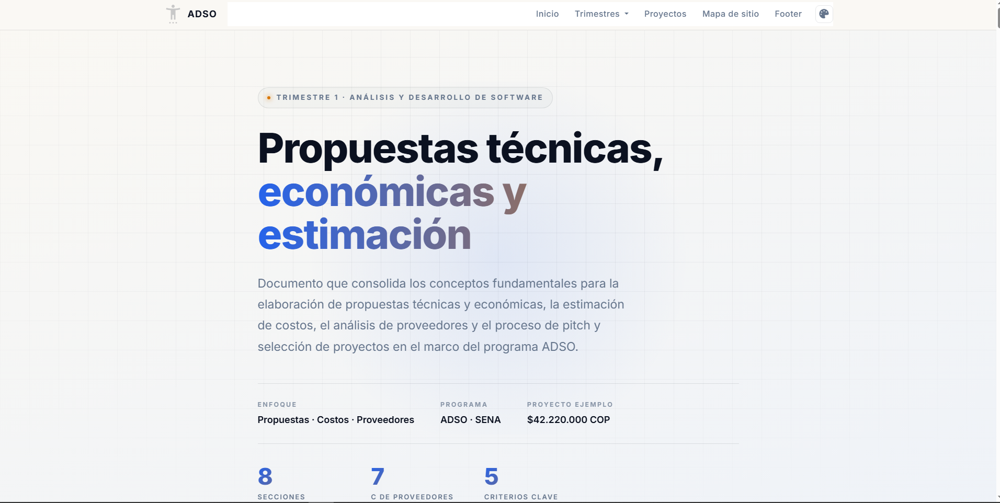
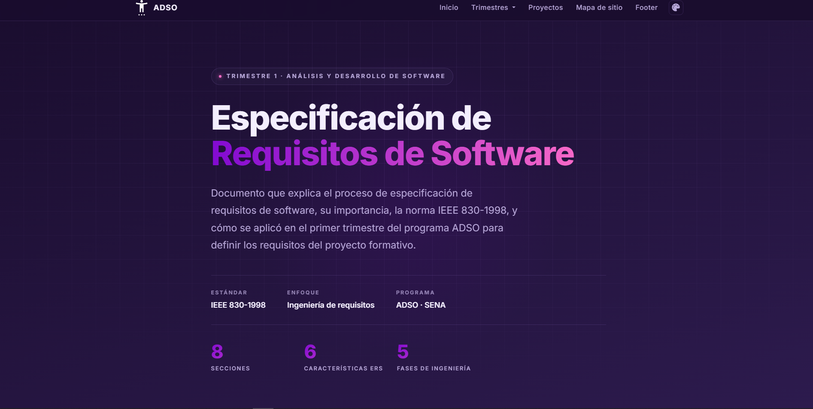
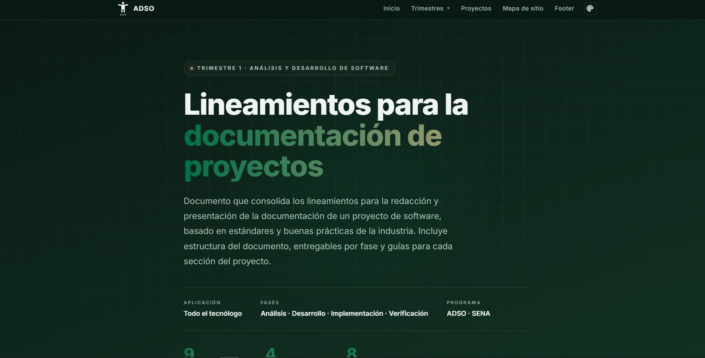

World Skills
00 · World Skills
Sitio web del proyecto World Skills, donde se documentan las competencias, actividades y retos desarrollados en el marco de las habilidades técnicas.
Abrir sitioFundamentos del análisis de requisitos, modelado con UML, bitácora de aprendizaje y teoría general de sistemas. Los primeros pasos en el mundo del desarrollo de software.
Explora los cinco módulos teórico-prácticos que componen el primer trimestre del Tecnólogo en Análisis y Desarrollo de Software.

Sitio web del proyecto World Skills, donde se documentan las competencias, actividades y retos desarrollados en el marco de las habilidades técnicas.
Abrir sitio
Documento base del trimestre con fuentes de información, técnicas de recolección, entrevistas, encuestas, diagramas de flujo, DFD, UML y un ejemplo práctico.
Ver proyecto
Introducción al lenguaje unificado de modelado: diagramas de clases, casos de uso, secuencia y actividad para representar sistemas de software.
Ver proyecto
Fundamentos de la TGS: concepto de sistema, subsistemas, entradas y salidas, retroalimentación y su aplicación al análisis de software.
Ver proyecto
Modelos de negocio, ideas de proyecto y soluciones tecnológicas planteadas durante el primer trimestre: sectores agropecuario, salud, textil, logística, comercio, financiero, educación, automotriz, ganadero, mascotas y ambiental.
Ver proyecto
Conceptos fundamentales de las TIC: software, hardware, sistemas operativos, internet, ofimática, herramientas colaborativas, evaluación, optimización y una guía completa de operadores de búsqueda de Google.
Ver proyecto
Elaboración de propuestas técnicas y económicas, estimación de costos, factibilidad, proceso de pitch y selección de proyectos, análisis y evaluación de proveedores mediante las 7 C.
Ver proyecto
Proceso de especificación de requisitos de software, ingeniería de requisitos, norma IEEE 830-1998, estructura de la plantilla, ejemplo práctico y flujo de trabajo documental.
Ver proyecto
Lineamientos para la redacción y presentación de la documentación de un proyecto de software: estructura del documento, entregables por fase y guías de redacción por cada sección.
Ver proyecto